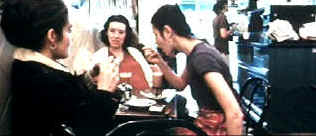

| Wonderland/B,B- |
| Universal/1999/109/ANA 2.35 |
I felt like a fish bobbing up at bait I didn't recognize, but I sure got hooked. Michael Winterbottom's wandering camera takes a raw look at the intertwining lives of three sisters in London. What is mesmerizing about this film is the drive for survival. The three girls have a wonderful spirit, quite surprising considering the sour state of their lives at this particular moment. Coupled with the beaten shock of a father and the mother who sucks the last ounce of life from him, the three girls rise above the odds.
 |
| Hand held and natural. ©Universal |
The action takes place during one week in the lives of these people. The events
are rather ordinary, but they take on enormous proportions within the context of the film's flow.
The hand held camera work blends intimately and seamlessly with the characters.
Winterbottom is truly a conductor sitting in front of the editing bay, waving
his hands with certain decision in creating a musical rhythm for this moody
film. Winterbottom even manages to make some camera effects especially
resonant.
The outstanding ensemble cast is led by the shy charm of Gina McKee.
McKee's Nadia exhibits a modest hunger for happiness. There's no greed pushing at the base of this
woman. She wants her modest share of happiness. McKee makes you want her to find her love. Shirley
Henderson and Molly Parker are equally appealing in their very honest performances as Nadia's
sisters Molly and Debbie. Kika Markham plays the mother of the girls with pathetic
authenticity and Jack Shepherd is perfectly beaten as dad. Ian Hart creates
another unique character as Debbie's ex husband.
Get used to it, the grain that is, if you want to enjoy this film on DVD.
Winterbottom lets the grain all hang out in an attempt to add even more grittiness to this tale than it
already has. The shooting style does give a natural immediacy to the material.
The DVD transfer is true to the film material. Grain is prevalent, but
controlled and consistent. Color is slightly muted, again, perhaps washed by
the grain. The film was shot Super 16 for flexibility of all the hand held
shots. Lighting is also almost completely natural. The images are sharp
through the grain, the shadow detail just fine. The Dolby Digital 5:1 surround
mix catches the beat of the city and the action of the clubs. Michael Nyman's
excellent score emphasizes the pathos in the air and is cleanly rendered on
the DVD.

Selections from the Feature Archive
include articles on Akira Kurosawa, Frank
Darabont, Blonde Bimbos, Hollywood Street Gangs, or Vietnam: The
Hollywood Pariah, and many more....
Robert
A. Harris
He's part of the dynamic duo that restored Lawrence of Arabia, Spartacus, My Fair Lady and Vertigo. Harris rides a white horse into the for the cause of preserving our film legacy. Click on the image to read more.

 Direct from the corridors of the Home Theater Forum, Home Theater Talk is the
newest place on the Net to discuss everything home theater. Friendly atmosphere and knowledgeable
folks are the secret ingredients.
Direct from the corridors of the Home Theater Forum, Home Theater Talk is the
newest place on the Net to discuss everything home theater. Friendly atmosphere and knowledgeable
folks are the secret ingredients.
 Sight and Sound Magazine is the venerable voice of
The British Film Institute. The site includes articles and film reviews. A great resource in print
and on the Internet.
Sight and Sound Magazine is the venerable voice of
The British Film Institute. The site includes articles and film reviews. A great resource in print
and on the Internet.

An on-line Home Theater magazine with excellent hardware reviews,
including thorough and responsible research. Check it out.

Looking for information about widescreen movies and hardware. The Widescreen Movie Center
is the place to go.